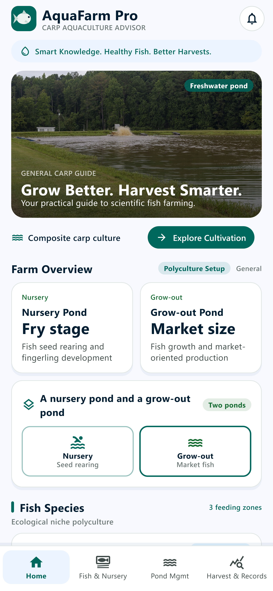
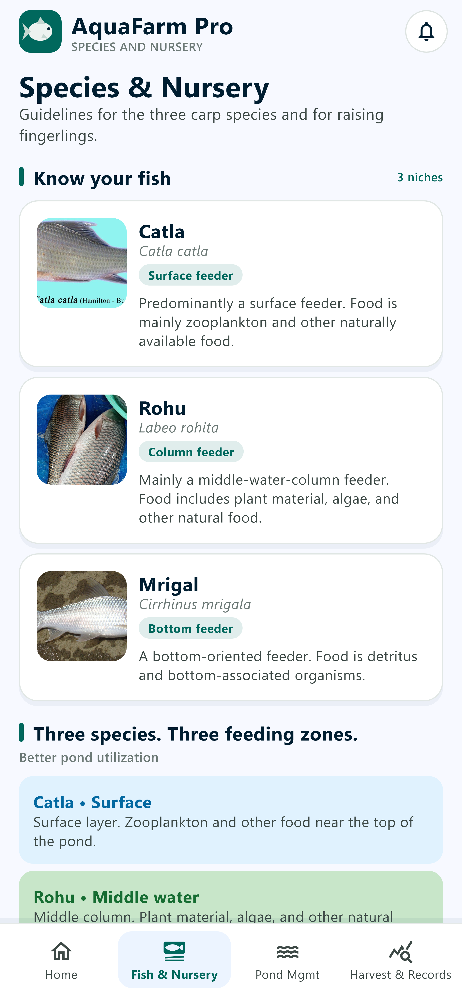
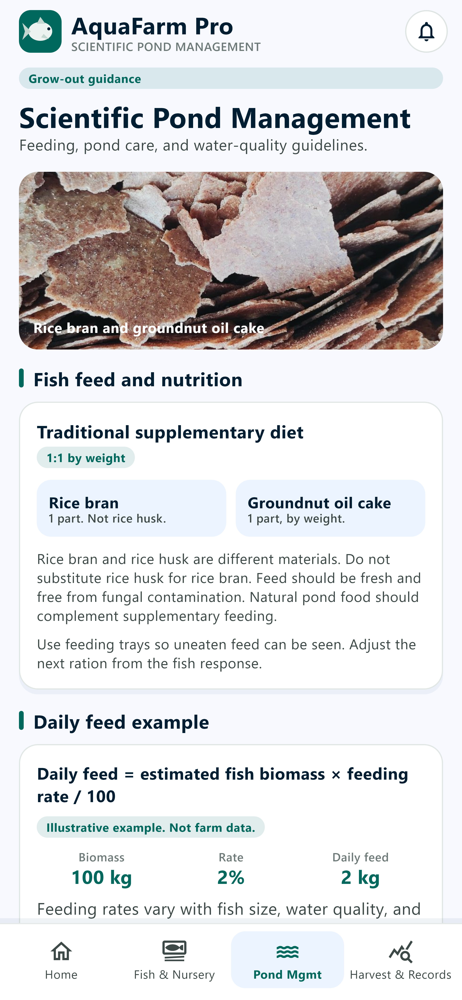
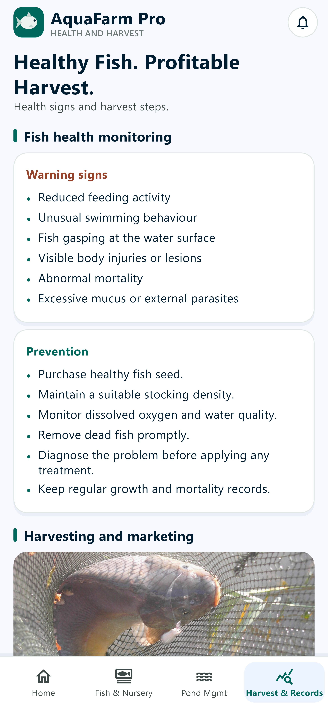

A guide for freshwater carp ponds
Three fish, one pond
Catla, Rohu, and Mrigal can share the same water because each one feeds in a different layer. AquaFarm Pro is a phone guide to that way of farming, written for anyone who wants the steps in plain language.
Raising carp is a chain of small decisions. Where the young fish come from. What goes into the feeding tray. What the surface of the pond looks like at dawn. When a fish is ready for market. AquaFarm Pro walks through that chain for Indian freshwater composite carp culture: Catla, Rohu, and Mrigal grown together.
The app is a guide you read. It does not measure your pond, and the numbers on the screen are general reference points, not a report from a particular farm. Pictures of ponds, fish, and feed are there to help you recognise the subject. They are not photographs of your own place.
Start with a map of the work
The home screen is the front door. It shows two kinds of pond that belong in this style of farming. A nursery pond is for rearing fish seed into fingerlings. A grow-out pond is where those fish are raised toward a size the market will take.
From there the guide opens four subjects: fish seed and the nursery, feed, pond water, and health and harvest. The line across the top is the promise of the app in one sentence: smart knowledge, healthy fish, better harvests.
One daily habit is called out on the home screen. Look at the pond surface at dawn. Fish gasping there can be a sign that dissolved oxygen is low.

Each carp has its own layer
The Fish & Nursery screen introduces the three major carps by the part of the pond they use.
- Catla (Catla catla) is a surface feeder. Its food is mainly zooplankton and other food near the top.
- Rohu (Labeo rohita) feeds in the middle of the water, on plant material, algae, and other natural food.
- Mrigal (Cirrhinus mrigala) feeds along the bottom, on detritus and the organisms that live there.
Put together, the three species use more of the pond than any one of them would alone. Natural food still depends on suitable water, and the fish still need careful supplementary feeding.
Rearing is described in three stages. Spawn grows into fry in the nursery. Fry grow into fingerlings. Fingerlings grow into market fish in the grow-out pond. A length around 8–12 cm is given as a general preference when you stock a grow-out pond. Measure the fish in your hand. That length is a preference, not a result copied from one farm.
The nursery steps stay practical. Buy active, even seed from a reliable hatchery, and leave seed that is injured or swimming in an odd way. Before stocking, clear unwanted fish, predators, and excess weeds, check the bunds and inlets, and apply lime and fertilizer according to the soil and water so natural food can develop. During rearing, watch the water, offer suitable feed, and keep track of growth, deaths, and how crowded the pond is. Rice bran belongs in the feed. Rice husk is a different material and is not a stand-in. Before the fish move on, grade them, look them over, and give them time to adjust.

Feed by weight, and watch the water
The pond screen is about the grow-out pond: what you offer the fish, and what you look for in the water.
The traditional supplementary diet is rice bran and groundnut oil cake, one part of each by weight. Keep the feed fresh and free of mould. A feeding tray lets you see what is left. The next day’s amount should follow how the fish respond.
The screen includes one worked example, and it is labeled as an example, not as data from a farm. If the fish weigh about 100 kg and the feeding rate in use is 2 percent, the day’s feed is 2 kg. The rate moves with fish size, water, and appetite. Half the weight of the fish is not a daily ration.
Water guidance is written as ranges to keep in mind. Dissolved oxygen is desirable at about 5 mg/L or higher, and the useful check is early morning. pH is often followed around 6.5 to 8.5. Temperature is worth writing down, along with how the fish behave. Ammonia needs watching so it does not build up. A grow-out depth around 1.5 to 2.5 metres is a common reference. Choose the depth for the site, and measure the pond you are using.
The same screen covers the pond itself: a stocking density that suits the water, organic matter that is not left to pile up, grass on the bunds, sound bunds for flood water, a screened inlet, and a screened overflow so extra water can leave while the fish stay in.

Notice trouble before you lift the net
The last screen is titled Healthy Fish. Profitable Harvest. The work on the page is health first, then the harvest. It does not calculate profit, weight, or a selling price.
Warning signs listed in the app are reduced feeding, unusual swimming, gasping at the surface, visible injuries or sores, deaths that are out of the ordinary, and heavy mucus or external parasites. The prevention list is quieter: healthy seed, a suitable stocking density, attention to oxygen and water quality, dead fish removed promptly, a diagnosis before any treatment, and a simple record of growth and deaths.
When fish are ready, the harvest steps are short. Check size against what buyers want. Net the fish that are marketable. Grade them by size and species. Handle them so they are not injured. Keep the work clean. Move them to market quickly.
Lime doses, stocking numbers, and treatments are not in this guide as fixed recipes. Ponds differ. A local fisheries officer, or another qualified adviser, is the right person for a decision that depends on your soil, your water, and the fish in front of you.

What to take to the pond
Four tabs cover the season. Home for the shape of the farm. Fish & Nursery for the three species and the young fish. Pond Mgmt for feed and water. Harvest & Records for health and the day of sale. Read a screen, then look at the real pond. The app is there so those two views can sit side by side.